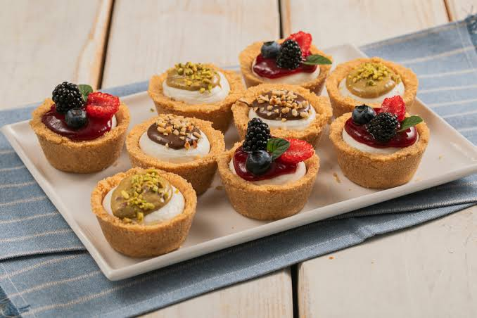

Decoración de nuestros cheesecakes
🌿Descubre cómo decoramos cada cheesecake con mucho cuidado y dedicación.
Softy Cakes
Cheesecakes fríos ♡
Aquí podrás ver un poco más de cerca el proceso, los sabores y todo lo que hace especial a nuestros cheesecakes fríos.

Descubre cómo decoramos cada cheesecake con mucho cuidado y dedicación.
Conoce la variedad de sabores que tenemos y encuentra tu favorito.
Escucha lo que dicen quienes ya han probado nuestros cheesecakes fríos.
Te mostramos paso a paso cómo se preparan nuestros deliciosos cheesecakes.
Un recorrido por toda nuestra línea de cheesecakes fríos.
Conoce el esfuerzo, la pasión y el trabajo detrás de cada cheesecake.